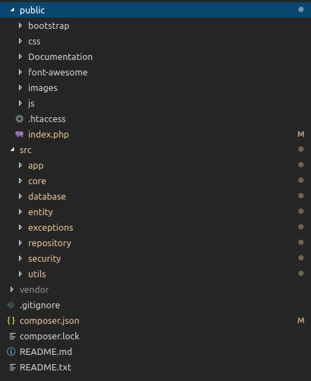
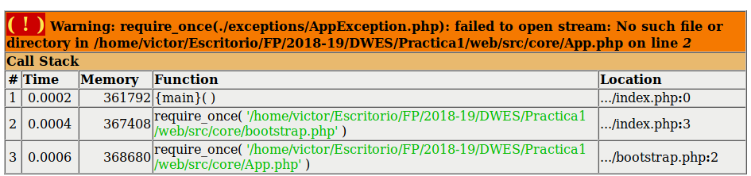
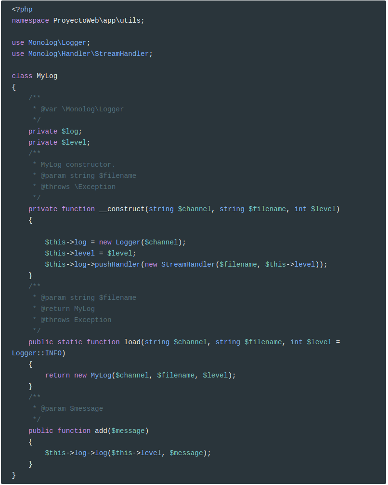
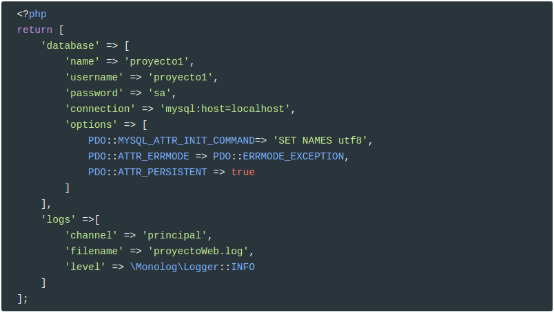
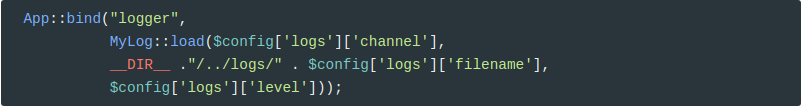
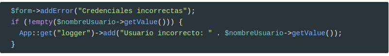

Uso de composer en nuestro proyecto
Vamos a usar composer en nuestro proyecto. Para ello hemos de empezar a refactorizar código y directorios.
Lo habitual en una aplicación web es tener un directorio llamado public de donde cuelgan todos los archivos que son accesibles con un cliente web. En nuestro caso, este directorio sólo debe contener el archivo index.php y .htaccess. Además, contendrá todas las carpetas que contengan css y javascript.
Todos los demás archivos no deben estar accesibles, por lo que se mueven a un directorio (src) a la misma altura que public y donde también estará ubicado el directorio vendor.
Por tanto, el primer paso es crear esta estructura. Para mover los archivos hacedlo con git mv.
Por ejemplo:
git mv js/ public/git mv entity/ src/La estructura final será como sigue:

Ahora viene el proceso más tedioso y es cambiar todos los require_once por use, además de agregar los espacios de nombres a nuestras clases.
A cada clase le hemos de añadir el namespace correspondiente y hemos de arreglar los scripts para que hagan use. En otro caso, saltarán mensajes como el siguiente:

IMPORTANTE
Haced un salto de fe y descargaos la versión refactorizada desde aquí.
Descomprimidla en vuestro proyecto, sobrescribiendo todos los archivos.
Refactorización
Os voy a explicar los cambios que se han realizado.
Incluir autoload
En index.php
xxxxxxxxxx<?phpsession_start();require __DIR__ . '/../vendor/autoload.php';require_once __DIR__ . '/../src/core/bootstrap.php';He incluido el archivo autoload.php para poder hacer la carga automática de clases. Como ahora todas las peticiones pasan por este script, no hace falta que lo hagamos en cada controlador. Esta es la ventaja de tener un controlador frontal: en él se delega la inicialización de la aplicación.
Además, también se inicia sesión para no hacerlo en todos los scripts.
Namespaces
En todas las clases he añadido su namespace siguiendo la ruta en la que está almacenada la misma. Si está almacenada en src/entity/Entity.php, el namespace será ProyectoWeb\entity.
x<?phpnamespace ProyectoWeb\entity;abstract class Entity { public abstract function toArray():array; }Acordaos que en composer.json se fija que el directorio src se corresponde con el namespace ProyectoWeb.
xxxxxxxxxx{ "autoload": { "psr-4": {"ProyectoWeb\\": "src"} }}Sin embargo, la clase EmailValidator tiene como namespace ProyectoWeb\Forms\Validator porque está guardada en el directorio src/Forms/Validator/EmailValidator.php.
xxxxxxxxxx<?phpnamespace ProyectoWeb\Forms\Validator;use ProyectoWeb\Forms\Validator\Validator;class EmailValidator extends Validator { //...}IMPORTANTE:
El
namespacedebe coincidir también con la capitalización de los directorios
Ahora también, cuando se usa una clase original del PHP se debe anteponer \para que sepa que está en el espacio de nombres raíz. Esto sólo ocurre cuando en el script definamos un namespace. En otro caso no encontrará la clase.
Por ejemplo, en QueryBuilder.php
xxxxxxxxxxpublic function executeQuery($sql){ try { $pdoStatement = $this->connection->prepare($sql); $pdoStatement->execute(); $pdoStatement->setFetchMode(\PDO::FETCH_CLASS | \PDO::FETCH_PROPS_LATE, "ProyectoWeb\\entity\\" . $this->classEntity); return $pdoStatement->fetchAll(); }catch(\PDOException $pdoException){ throw new QueryException('No se ha podido ejecutar la consulta solicitada: ' . $pdoException->getMessage()); }}Fijaos que ahora también hay que añadir el namespace de la entidad. Tiene dos \porque el carácter \es el carácter de escape en PHP.
Cambiar require por use
Ahora ya no hace falta usar requires: sólo use.
Por ejemplo, en galeria.php
xxxxxxxxxxuse ProyectoWeb\core\App;use ProyectoWeb\Forms\TextareaElement;use ProyectoWeb\Forms\LabelElement;use ProyectoWeb\Forms\ButtonElement;IMPORTANTE:
No se puede hacer
use ProyectoWeb\Forms\*en PHP
Rutas a directorios
Otro cambio tiene que ver con la ruta a las imágenes. Al haber cambiado los directorios de lugar, ya no funciona
xxxxxxxxxx $file->saveUploadedFile(ImagenGaleria::RUTA_IMAGENES_GALLERY); porque esta ruta es relativa al script. Para que funcione hace falta conocer la ruta donde está el controlador frontal, por eso en index.php añado una propiedad al contenedor de servicios.
xxxxxxxxxxApp::bind('rootDir', __DIR__ . '/');que luego uso allí donde haga falta conocer dicha ruta:
xxxxxxxxxx $file->saveUploadedFile(APP::get('rootDir') . ImagenGaleria::RUTA_IMAGENES_GALLERY); Monolog
Vamos a usar monolog en nuestro proyecto para poder tener un registro de eventos. Por ejemplo, cuando un usuario introduzca incorrectamente las credenciales de sesión, grabaremos un mensaje en el log.
Lo primero que hemos de hacer es hacer instalar monolog con composer.
xxxxxxxxxxcomposer require monolog/monolog
Ejemplo de uso:
xxxxxxxxxxrequire_once('../vendor/autoload.php');use Monolog\Logger;use Monolog\HandlerStreamHandler;$logger = new Logger('canal-de-logger');$logger->pushHandler(new StreamHandler(DIR.'/test_app.log', Logger::DEBUG));$logger->error('Logger is now Ready');Pero vamos a encapsularlo en una clase que guardamos en src/app/utils/ con el nombre MyLog

Esta clase anterior fijaos que es un poco especial, ya que es el método estático load quien se encarga de crear una instancia de sí misma!
Añadimos una nueva clave en nuestro archivo de configuración config.php (y en config-sample.php):

Y ahora lo creamos en index.php

Creamos la carpeta logs a la misma altura que src y vendor (cuidado que apache o php-cli han de tener permisos de escritura).
Y lo usamos donde queramos. Por ejemplo en el controlador login.php

Lo que genera los siguientes mensajes en el proyectoWeb.log:
xxxxxxxxxx[2018-12-04 20:11:59] principal.INFO: Usuario incorrecto: asdd [] [][2018-12-04 20:15:05] principal.INFO: Usuario incorrecto: asd [] [][2018-12-04 20:15:17] principal.INFO: Usuario incorrecto: sdfsfsfd [] []
Más información en:
SimpleImage
La librería SimpleImage que hemos usado para trabajar con imágenes, también se puede instalar mediante composer.
Es muy sencillo,
xxxxxxxxxxcomposer require claviska/simpleimageY ahora la usamos allá donde haga falta, sin necesidad de hacer require.
Por tanto, eliminamos
xxxxxxxxxxrequire_once __DIR__ . "/../../utils/SimpleImage.php";de asociados.php, galeria.php y ahora no hace falta anteponer la \antes del nombre de la clase
xxxxxxxxxx $simpleImage = new claviska\SimpleImage();Ya podemos eliminar src/utils/SimpleImage.php
Utils.php
El único require que nos queda por quitar es src/utils/utils.php. Creamos una clase llamada Utils en src/app/utils
Vamos a moverla con git:
xxxxxxxxxxcd srcgit mv utils/utils.php app/utils/Utils.phpEste es el resultado final de la nueva clase:
xxxxxxxxxx<?phpnamespace ProyectoWeb\app\utils;class Utils { public static function esOpcionMenuActiva(string $option): bool{ if (strpos($_SERVER["REQUEST_URI"], "/". $option) === 0 ){ return true; }elseif ("/" === $_SERVER["REQUEST_URI"] && ("index" == $option)){ //tal vez hayamos entrado de forma directa, sin index.php return true; }else return false; } public static function existeOpcionMenuActivaEnArray(array $options): bool{ foreach ($options as $option){ if (self::esOpcionMenuActiva($option)) { return true; } } return false; } public static function sanitizeInput(string $data): string { $data = trim($data); //Quitar las comillas escapadas \' y \ "" $data = stripslashes($data); //Prevenir la introducción de scripts en los campos $data = htmlspecialchars($data); return $data; } /** * Devuelve un máximo de tres elementos aleatorios del array $asociados * * @param array $asociados * @return array */ public static function getAsociados(array $asociados): array{ shuffle($asociados); return array_slice($asociados,0, 3); }}Ahora modificamos index.php (que hace uso de getAsociados).
xxxxxxxxxx$asociados = ProyectoWeb\app\utils\Utils::getAsociados($asociados);Y en nav.part.php ahora usamos ProyectoWeb\app\utils\Utils::esOpcionMenuActiva y ProyectoWeb\app\utils\Utils::existeOpcionMenuActivaEnArray
Retoques finales
Ahora ya sólo falta que las imágenes de la portada junto con los asociados, no estén hardcodeados. Usad los repositorios para modificarlo.
Credits.
Víctor Ponz victorponz@gmail.com
Este material está licenciado bajo una licencia Creative Commons, Attribution-NonCommercial-ShareAlike